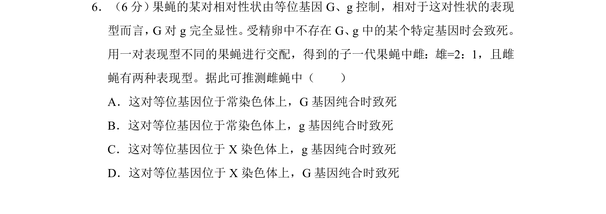
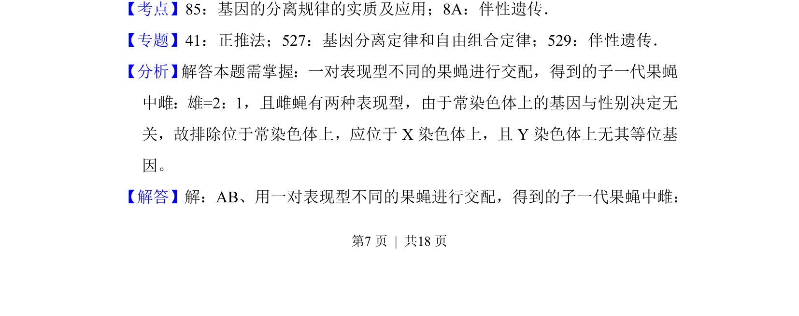
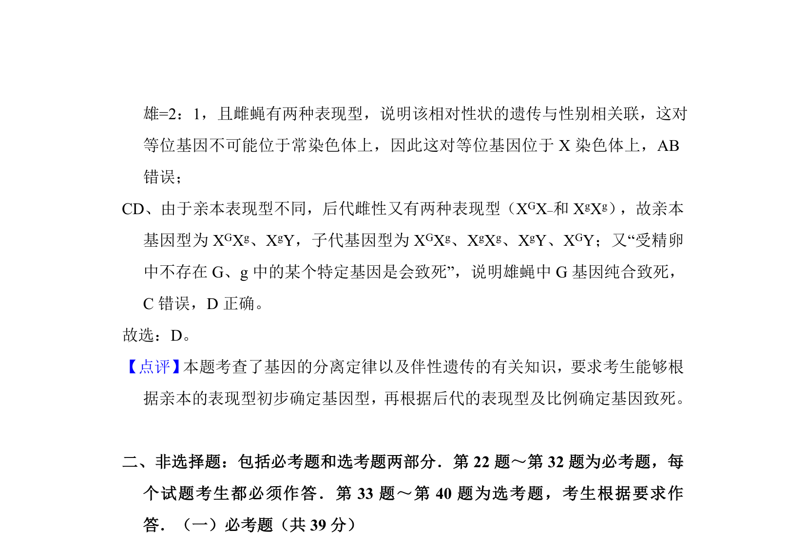

考点：基因分离定律 伴性遗传

该题通过果蝇交配子代性别比和表现型，推断致死基因的位置与显隐性关系


📄 原 PDF 第 7 页：
素材/真题/吉林/2008-2024·（吉林）生物高考真题/2016年高考生物试卷（新课标Ⅱ）（解析卷）.pdf
6．（6分） 果蝇的某对相对性状由等位基因G、g控制，相对于这对性状的表现 型而言，G对g完全显性。 受精卵中不存在G、g中的某个特定基因时会致死。 用一对表现型不同的果蝇进行交配，得到的子一代果蝇中雌：雄=2：1，且雌 蝇有两种表现型。据此可推测雌蝇中（ ） A．这对等位基因位于常染色体上，G基因纯合时致死 B．这对等位基因位于常染色体上，g基因纯合时致死 C．这对等位基因位于X染色体上，g基因纯合时致死 D．这对等位基因位于X染色体上，G基因纯合时致死
【考点】85：基因的分离规律的实质及应用；8A：伴性遗传．菁优网版权所有 【专题】41：正推法；527：基因分离定律和自由组合定律；529：伴性遗传． 【分析】 解答本题需掌握：一对表现型不同的果蝇进行交配，得到的子一代果蝇 中雌：雄=2：1，且雌蝇有两种表现型，由于常染色体上的基因与性别决定无 关，故排除位于常染色体上，应位于X染色体上，且Y染色体上无其等位基 因。 【解答】解：AB、用一对表现型不同的果蝇进行交配，得到的子一代果蝇中雌：